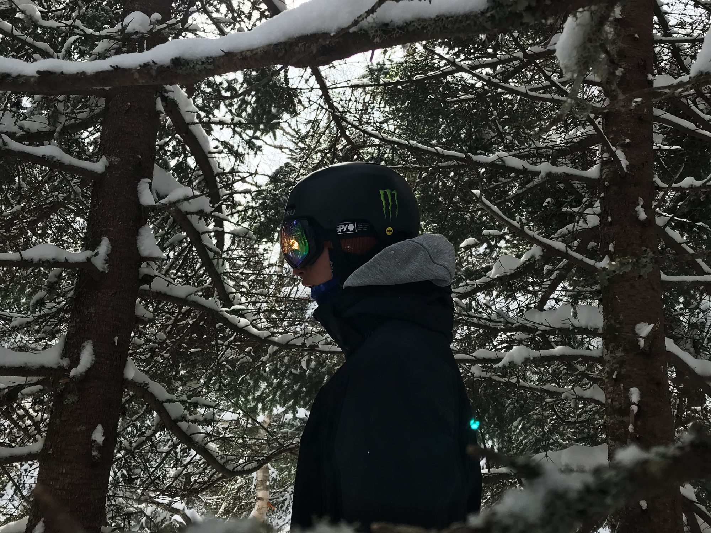
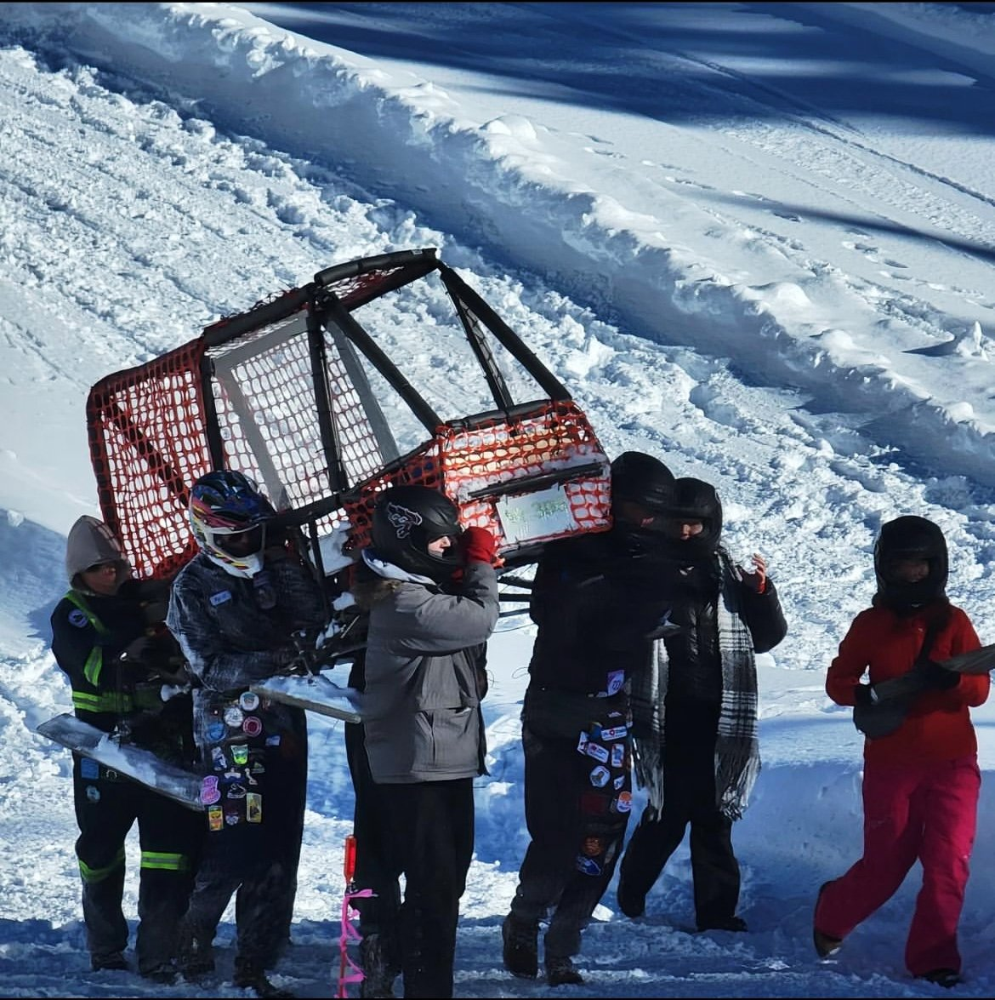
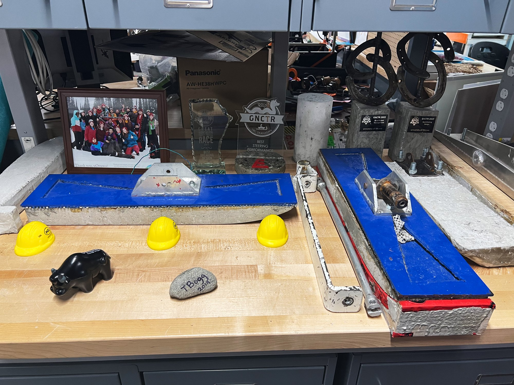
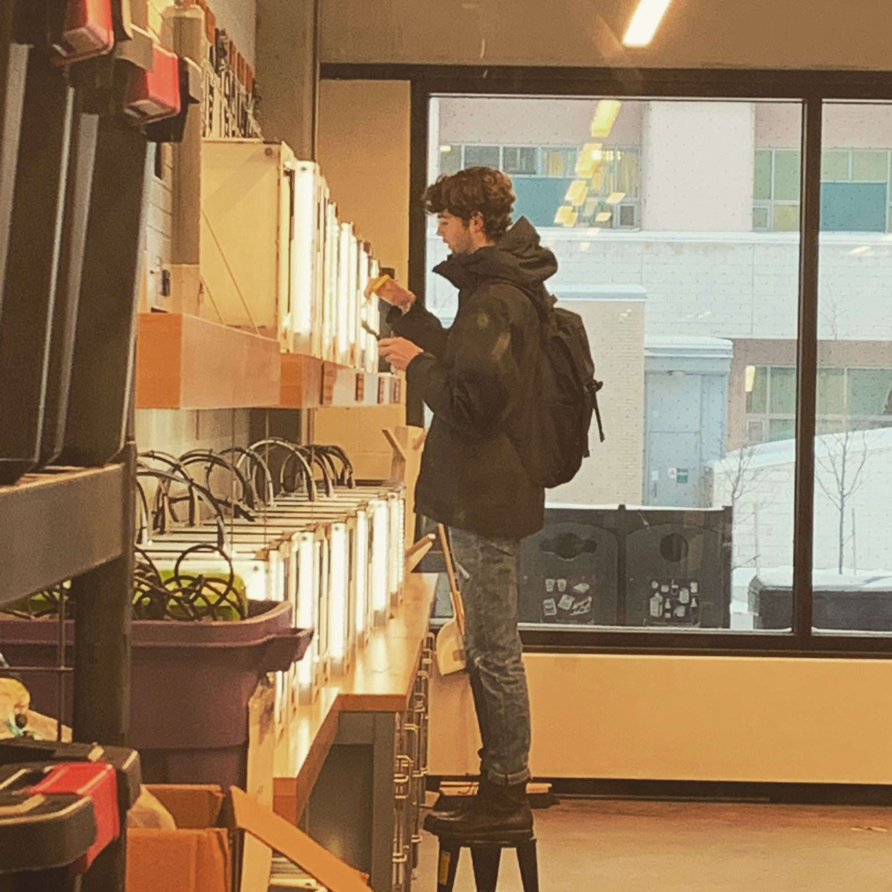
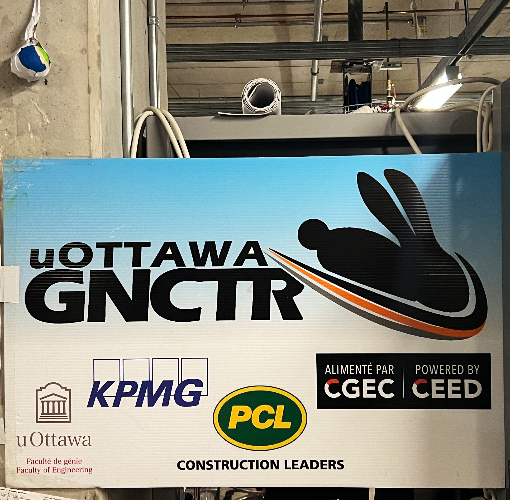
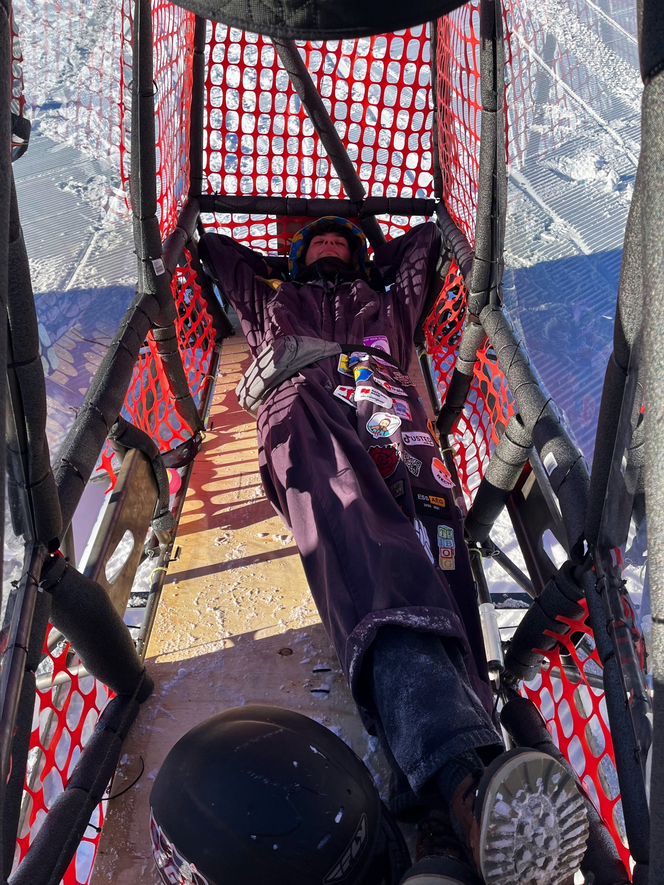

Zach Nott
Mechanical design & CAD Courtice, Ontario

It's hard to put into words what I am, let alone what I do. Designer, instructor, maker, artist, athlete: none of the words fit on their own, so I stopped picking one. There's beauty everywhere, and I only want to catch a glimpse of it. An architect sees it in buildings; a shipwright, in boats. I keep finding it in new places. So far I make simple gadgets, repair engines, film for YouTube, sell on Etsy and write code.
Origin
From 2021 to 2024 I led the steering design for the University of Ottawa's GNCTR concrete toboggan team: three seasons of rebuilding the system after the team's COVID pause, revising it from test results, and machining and welding the parts on CNC, lathe and shop equipment.
In the summers I worked as a junior inspector with WSP, checking installed sewer and water services against engineering drawings and standards.
I studied Mechanical Engineering (B.A.Sc. program) at the University of Ottawa from 2020 until injuries made me take a leave in 2024. I plan to finish the remaining requirements.





Create something from nothing.
无中生有; Wú zhōng shēng yǒu
Now
Two years of injuries kept me between four walls, and somewhere in there I realized I had never really taken steps for myself. Now it's hard not to.
Since January 2026 I've taken design and code seriously. My designs are published on MakerWorld and Etsy, from a camera tripod to lab gear. Alongside them I fix small engines in my own repair shop, edit video for my YouTube channel, and teach rock climbing. I'm excited for where it goes, and grateful for every step of it.
Next
I'm open to opportunities of any size: jobs, internships and projects. Need a volunteer? I'll be your second photographer at a wedding or an extra pair of hands at a charity event. I'd work a fish market or fill paint buckets; I like nearly everything, and life is pretty cool. Get in touch.
At a glance
- Fusion 360
- 7 years
- SolidWorks
- 6 years
- Python, C and C++
- 6 years
- Small-engine repair
- Under a year
- CNC, lathe and welding
- Under a year
- Education
- University of Ottawa, Mechanical Engineering
- Teaching
- Rock climbing, snowboarding (CASI)
- Volunteering
- Since 2015
- Known for
- Bridge Guitar